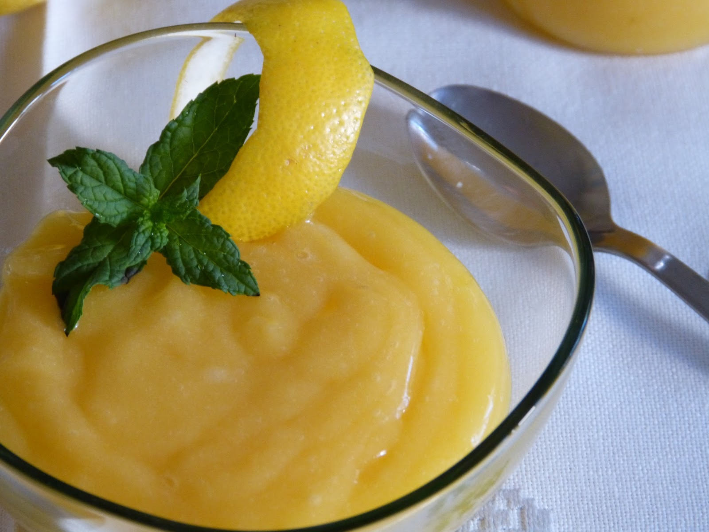

Crema de Limon

Descripción:
Cremita como para un Lemon Pie.
Ingredientes:
- 2 Limones (jugo y ralladura)
- 4 cucharadas de almidon de maíz (o media cucharada de mandioca y media de maíz)
- 1 taza de bebida o leche vegetal
Instrucciones:
- Disolver el almidon primero con poquito líquido para evitar grumos.
- Cocinar a fuego muy suave o mediano hasta que espese.